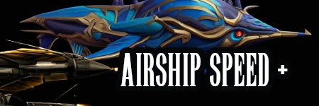

Kupo Mods (Formerly Mog Add-Ons)
The definitive master enhancement ecosystem for Final Fantasy IX on PC. Documented in Nexus Article #12 and written by Faospark, this guide details the origin, modular architectural split, and full catalog of all 10 specialized Kupo sub-modules.
What Are Kupo Mods?
Kupo Mods is a collection of mods managed by me, originally part of a larger project called Mog Add-ons. Mog Add-ons was first introduced on the Moogles and Mods Discord server so and later uploaded to Nexus Mods in September 2021.
Initially, it started as a graphical enhancement mod focused on improving the UI, character portraits, and controller support for Final Fantasy IX. Over time, it grew significantly, becoming one of the largest mods for the Steam version of the game in terms of scope.
As the project expanded, the original mod was split into several standalone mods to better organize and manage its features:
Kupo UI Suite • Kupo Heroes Pack • Modern Labels Plus • Kupo Buttons Pack • Kupo Portraits Pack • No EXP Plus • Memoria Launcher Themes • Support Ability Cost Modifier • Kupo Tweaks • Cursor Mod.
Each mod is designed to enhance different aspects of the game while maintaining full compatibility with one another.
Why the Name Change?
The sudden name change might come as a surprise, but it has been in consideration since 2023. The concept originated after I watched a video where "Mog Add-ons" were consistently called "Kupo Mods"—shout out to Sugi JRPG!
This new name resonated with me, prompting the decision to embrace a new beginning with a fresh, recognizable brand that honors Final Fantasy's iconic moogles.
Why Were Mog Add-ons Split?
There were three major factors considered for the decision:
- Mod Scale: The single package was becoming excessively large and cumbersome to download.
- Sub-mod Visibility: New mods were being made that were nearly identical to submods buried deep inside Mog Add-ons, simply because players didn't realize they were already included.
- Memoria Integration: I was specifically asked by the creators of the Memoria Mod Manager to separate them for modular 1-click toggling.
Starting with Version 4, the split was finalized. As of January 14, 2025, all mods have separate pages on Nexus Mods and are officially featured inside the Memoria Mod Manager.

📜 Historical Note: Retired Mod — Airship Plus
A short-lived submod created alongside the Kupo Heroes Pack featuring faster travel speeds and camera presets when flying the airship or Chocobo. This module was formally retired as the Memoria Engine integrated more robust options natively into the engine core, and its hero speed presets were absorbed into the Kupo Heroes Pack.